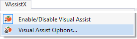

Welcome to Visual Assist
Visual Assist parses your files the first time you open each project, and comes alive when parsing is complete. Information is saved so future opens are fast.
We recommend you customize Visual Assist while the parsing occurs. The options dialog is in the VAssistX menu, and is available after you finish browsing these tips.
Contact us if you have any questions or need technical support.
Whole Tomato Software
www.wholetomato.com
